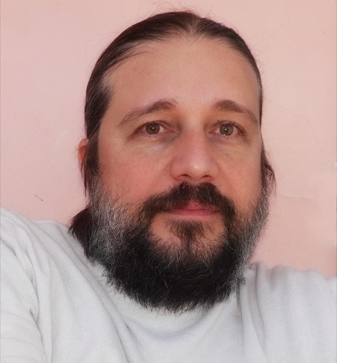

Carlo Nitsch
Full Professor in Mathematical Analysis
Dipartimento di Matematica e Applicazioni “R. Caccioppoli”
Università degli Studi di Napoli Federico II
About me
I graduated in Physics at the University of Naples Federico II in 1999 and earned my Ph.D. in Mathematics at the University of Rome La Sapienza (2000–2004). During my doctorate I spent a year as a visiting student at the Lawrence Berkeley National Laboratory (2002–2003).
I joined the University of Naples Federico II as a researcher in Mathematical Analysis in 2005, became Associate Professor in 2014 and Full Professor in 2018. I received the Carlo Miranda Prize for Mathematical Analysis in 2008 and an Alexander von Humboldt Research Fellowship for Experienced Researchers in 2013.
I am a member of the Accademia Pontaniana (since 2022) and of the Accademia di Scienze Fisiche e Matematiche of the Società Nazionale di Scienze, Lettere ed Arti in Napoli (since 2024). I coordinate the Ph.D. program Mathematical and Physical Sciences for Advanced Materials and Technologies (MPHS) at the Scuola Superiore Meridionale and serve on the board of the Ph.D. program Matematica e Applicazioni.
My research focuses on shape optimization, isoperimetric and functional inequalities, spectral problems with Robin boundary conditions, overdetermined problems, symmetrization and thermal insulation.
Short vitae
Academic career
- 2018 – presentFull Professor in Mathematical AnalysisDept. of Mathematics and Applications “R. Caccioppoli”, University of Naples Federico II
- 2014 – 2018Associate Professor in Mathematical AnalysisUniversity of Naples Federico II
- 2005 – 2014Researcher in Mathematical AnalysisUniversity of Naples Federico II
- 2004Ph.D. in Mathematics, University of Rome La SapienzaThesis: “Some mathematical problems in nonlocal continuum damage mechanics”. Advisor: Prof. Michiel Bertsch
- 1999Degree in Physics (110/110 cum laude), University of Naples Federico IIThesis: “Symmetrization methods and their applications”. Advisor: Prof. Angelo Alvino
Research stays abroad
- 2014Mathematisches Institut, University of Cologne, GermanyAlexander von Humboldt Fellowship for experienced researchers
- 2009Mathematical Sciences Institute, Australian National University, CanberraInvited by Prof. N. Trudinger
- 2002 – 2003Lawrence Berkeley National Laboratory, Berkeley, USAVisiting student under the supervision of Prof. G.I. Barenblatt
- 2001CMLA, École Normale Supérieure de Cachan (now ENS Paris-Saclay), France
Awards and recognitions
- 2024Member of the Accademia di Scienze Fisiche e Matematiche (SNSLA), Classe di Scienze Matematiche
- 2022Member of the Accademia Pontaniana, Class I – Pure and Applied Mathematical Sciences
- 2019Keynote speaker (Conferenza Generale), XXI Congress of the Unione Matematica Italiana, Pavia
- 2013Alexander von Humboldt Fellowship for experienced researchers
- 2008Carlo Miranda Prize for young researchers in Mathematical AnalysisAccademia di Scienze Fisiche e Matematiche, SNSLA Napoli
Management
- Cycle XLIICoordinator, Ph.D. program “Mathematical and Physical Sciences for Advanced Materials and Technologies”Scuola Superiore Meridionale
- Cycles XXXVIII–XLICoordinator, Ph.D. program “Matematica e Applicazioni”University of Naples Federico II
- 2020 – presentBoard member, Ph.D. program “Mathematical and Physical Sciences for Advanced Materials and Technologies”
- 2017 – presentBoard member, Ph.D. program “Matematica e Applicazioni”
- Member of the Presidio di Qualità, Scuola Superiore Meridionale
Research projects
- 2023Symmetry and Asymmetry in PDEsINdAM-GNAMPA, 12 months
- 2018Geometric Aspects of PDEs and Functional Inequalities in Optimal FormINdAM-GNAMPA, 12 months
- 2013Sobolev–Poincaré Inequalities: Embedding Constants, Stability Issues, Nonlinear EigenvaluesSTAR Program, University of Naples Federico II with Compagnia San Paolo and Istituto Banco di Napoli, 18 months
- 2013Functional Inequalities and Overdetermined ProblemsINdAM-GNAMPA, 12 months
- 2009Solutions of Partial Differential Equations: Analytical and Geometric AspectsINdAM-GNAMPA, 12 months
- 2007Isoperimetric Inequalities and StabilityRegione Campania, Legge Regionale 5, 12 months
Editorial activities
- 2016Editor, Geometric Properties for Parabolic and Elliptic PDE’sSpringer Proceedings in Mathematics & Statistics
- 2009Editor, Renato Caccioppoli: hanno detto di lui
Publications
Outreach
Books
Selected public lectures
- La matematica del cubo di Rubik
27 Feb 2026 · Matematic@…mente, Liceo Scientifico Piero Calamandrei, Napoli - Cosa ha dato la matematica alla meccanica quantistica e cosa ha ricevuto
13 Feb 2026 · I Pomeriggi della Fisica e della Matematica, L.S. Gaetano Salvemini, Bari - Mapematica
13 Feb 2026 · Log@ritmi: l’impronta digitale, L.S. Gaetano Salvemini, Bari - Architetti senza compasso
6 Dec 2025 · Mathesis: un viaggio di 130 anni tra numeri, parole, forme e suoni, Vicenza - Cosa ha dato la matematica alla meccanica quantistica e cosa ha ricevuto
24 Nov 2025 · Scienza e Tecnologia Quantistica, SNSLA & Accademia Pontaniana, Napoli - Alcune grandi occasioni di divulgazione della matematica nelle Accademie
6 Jun 2025 · Le Accademie e la divulgazione della cultura, SNSLA & Accademia Pontaniana, Napoli - La matematica del Cubo di Rubik
23 Jan 2025 · Fondazione CRC, side event of “50 anni di Cubo”, Cuneo - MaPematica
23 Apr 2024 · Dalle Teorie ai Modelli: Storie di Scienziati e Scoperte Scientifiche, Napoli - MatematicaMen…del
10 May 2022 · Mendel days @ unina, Napoli - Contando le note
29 Nov 2019 · Come alla Corte Young Edition, Napoli - Note Pitagoriche
8 Apr 2019 · Award ceremony of the Olimpiadi di Matematica, Federico II
Contact
Dipartimento di Matematica e Applicazioni “R. Caccioppoli”
Università degli Studi di Napoli Federico II
Via Cintia, Monte S. Angelo
I-80126 Napoli, Italy